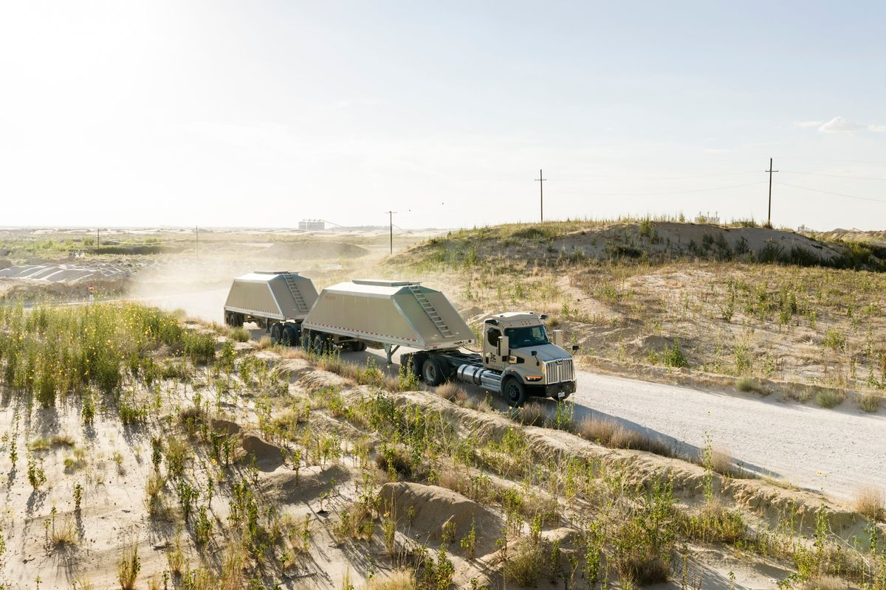

Kodiak AI
Building businesses on driverless trucks
We proved the value of bringing autonomy into a business that already runs: driverless trucks working alongside human-driven fleets, and a clear picture of how a customer actually adopts this technology, from the first load to the operating changes, trust, and economics that follow.
35+driverless trucks in commercial service
24/7hauling, with no one in the cab
1stcommercial driver-out L4 deployment in the US